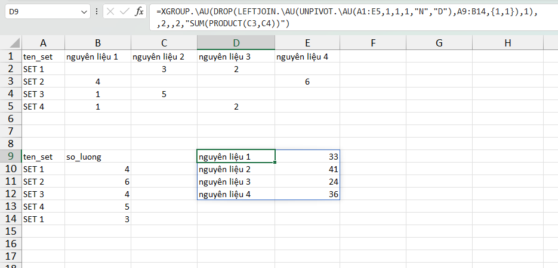

VD1: Thống kê số loại mặt hàng mua bởi mỗi khách hàng theo từng tháng.

VD2: Tính tổng số lượng nhập, xuất theo từng mã hàng.

VD3: Đếm tổng số lượt ăn của mỗi nhân viên dựa trên mỗi khung giờ.

VD4: Tính toán số lượng nguyên liệu tồn kho với XGROUP.
Bài toán này có cùng kết quả khi sử dụng hàm QUERY.
Để hiểu tại sao sử dụng SUM(PRODUCT(C3,C4)) bạn đọc xem ví dụ mẫu /Query - Tồnkho.xlsx(Dropbox)
=XGROUP.\AU(DROP(LEFTJOIN.\AU(UNPIVOT.\AU(A1:E5,1,1,1,"N","D"),A9:B14,{1,1}),1),,2,,2,"SUM(PRODUCT(C3,C4))")
- Nếu sử dụng biến phụ, cần khai báo các biến lần lượt theo thứ tự từ trái sang phải (vd: v3=v1+v2 thì cần khai báo các biến v1,v2 trước v3). - Danh sách biến [variables] có thể khai báo dạng mảng ({"v1=c1","v2=2*c2","v3=v1+v2"} hoặc chuỗi "v1=c1;v2=2*c2;v3=v1+v2"). - Tham chiếu c1, c2, c3,.. là tên cột dữ liệu. - Mỗi một funcname ứng với một biểu thức tính toán duy nhất (vd: INDEX(c2,2) hoặc đặt ẩn phụ v1=INDEX(c2,2)). - Hàm được sử dụng khi việc tính toán có mối liên hệ giữa các cột, vì vậy yêu cầu cú pháp chặt chẽ so với hàm GROUP. - Hỗ trợ nhiều hàm nâng cao hơn so với hàm GROUP. - Để hiểu cách sử dụng hàm xem thêm các file ví dụ mẫu .xlsx từ DROPBOX.
VD4: Tìm giao dịch cuối cùng của mỗi shop dựa vào mốc thời gian tại cột C.

Giải thích cách hoạt động: Hàm sẽ phân nhóm theo cột 1 và tiến hành tính toán lên cột 2,3. Tại cột 2: hàm sẽ tìm giá trị lớn nhất (ngày cuối cùng) của từng nhóm với giá trị đại diện là v1 (chẳng hạn Shop 1 ngày cuối cùng là 1/3/2023). Tại cột 3: hàm ROW(V1) trả về vị trí dòng giá trị này, INDEX(c3,ROW(v1)) trả về giá trị tại cột 3 ứng với dòng vừa tìm được (=7).
Related function
GROUP Phân nhóm bảng dữ liệu dựa trên trường (cột) chỉ định. (hỗ trợ các hàm nâng cao).
GROUPBY Phân nhóm bảng dữ liệu dựa trên một mảng dữ liệu chỉ định, hỗ trợ tính toán tùy chỉnh.
XGROUPBY Hàm mở rộng của GROUPBY. (hỗ trợ các hàm nâng cao).
Return to Home